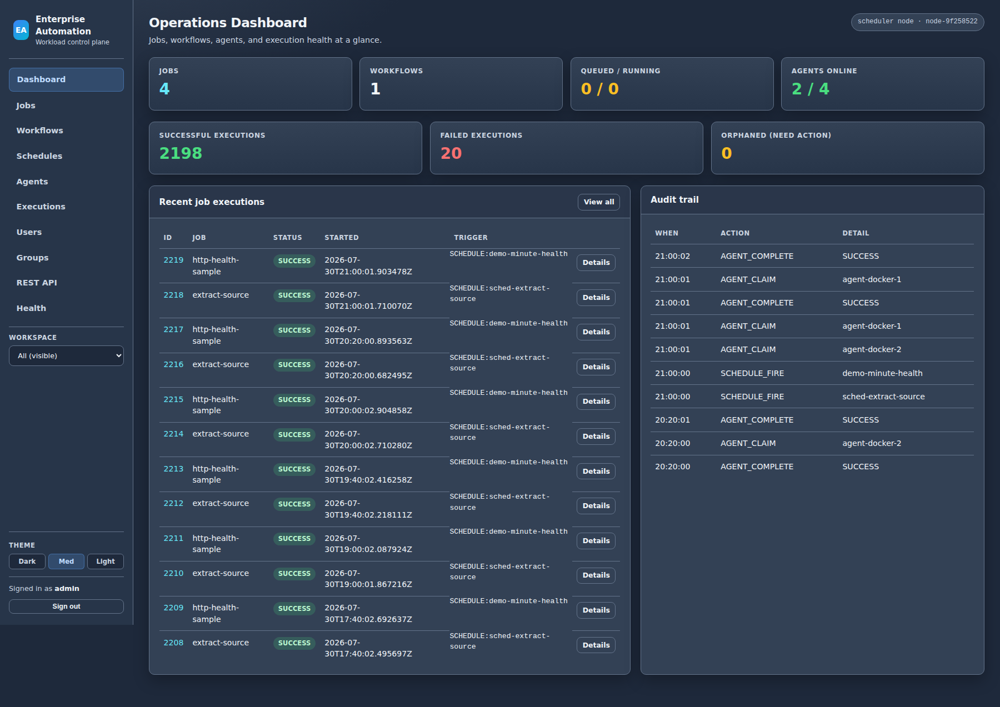
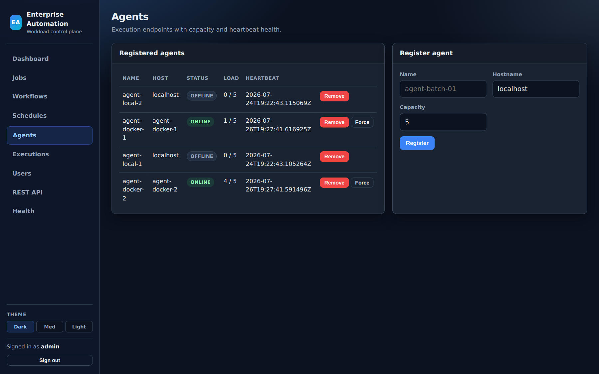
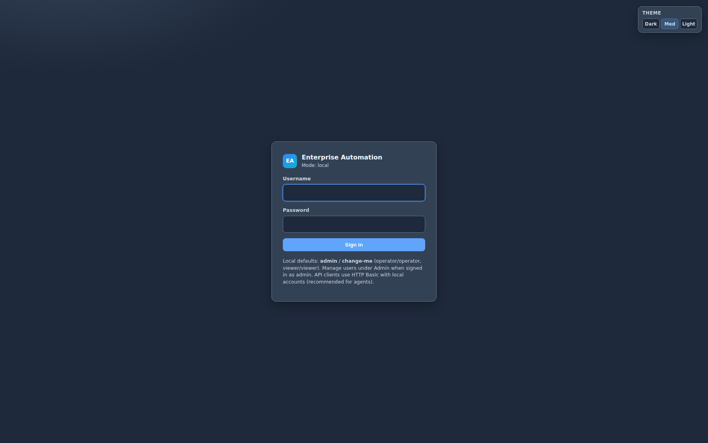
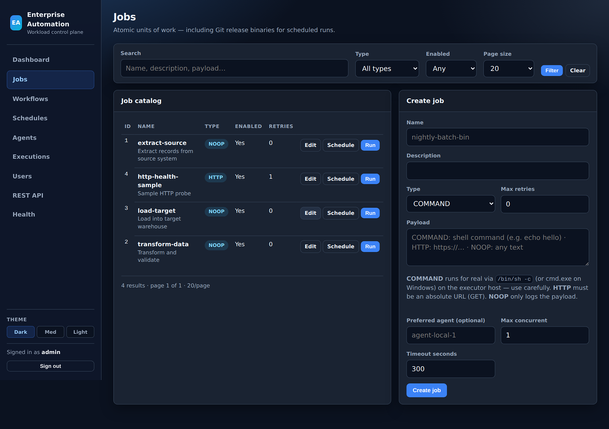
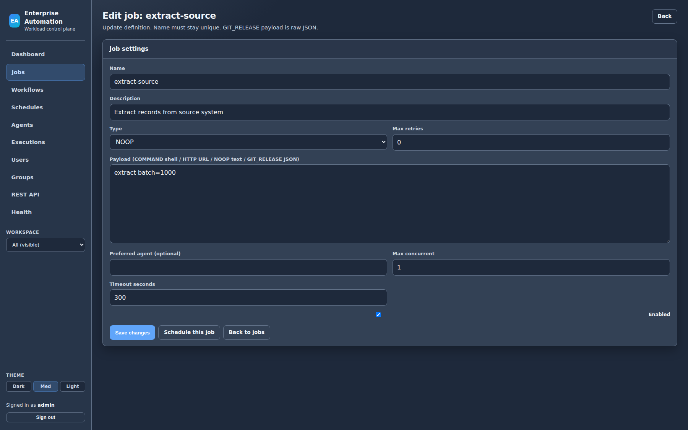
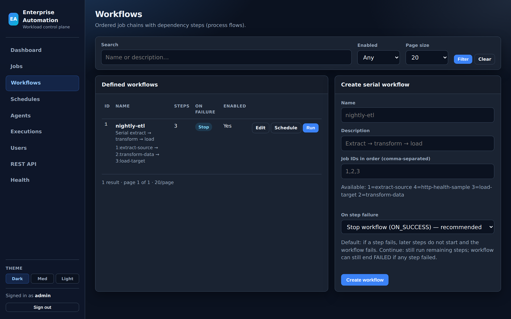
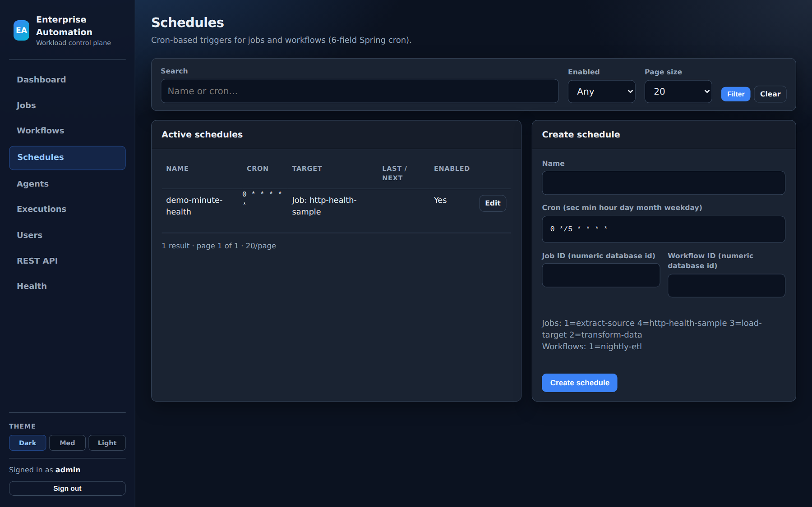
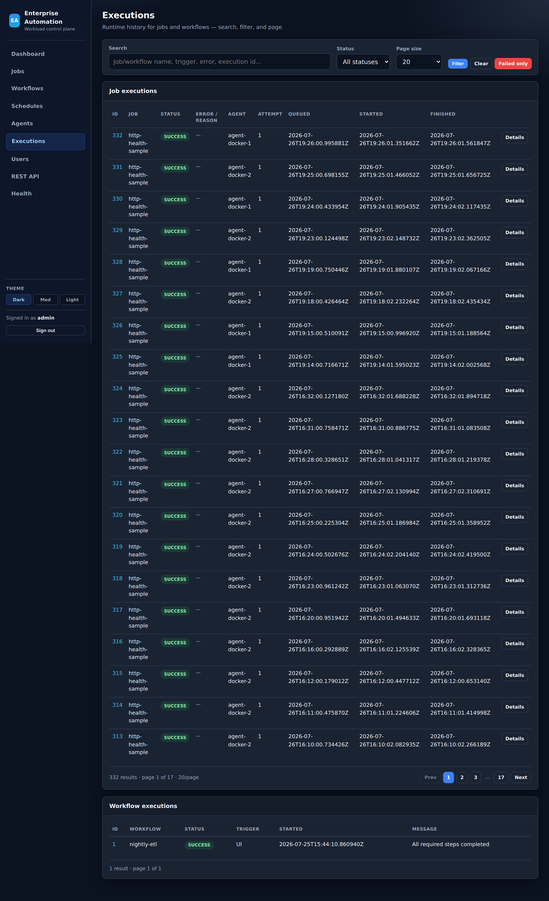
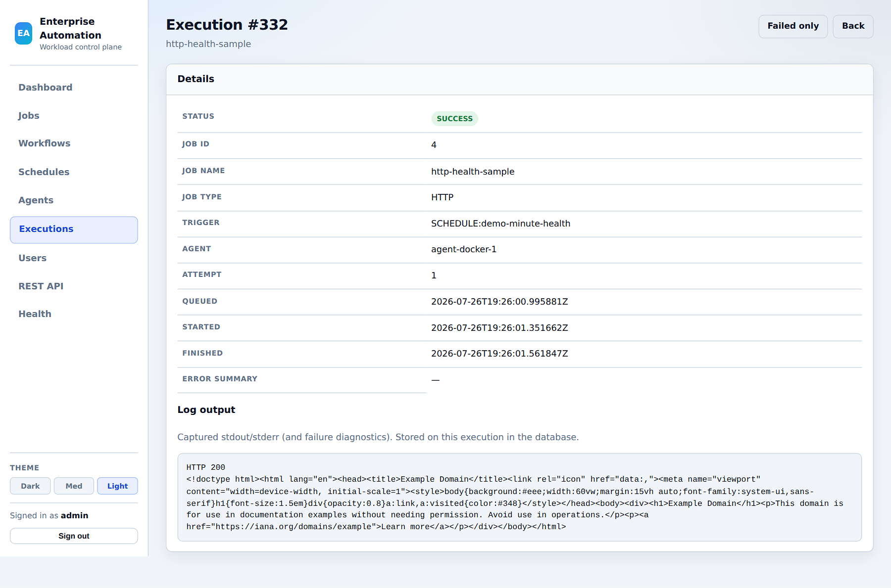
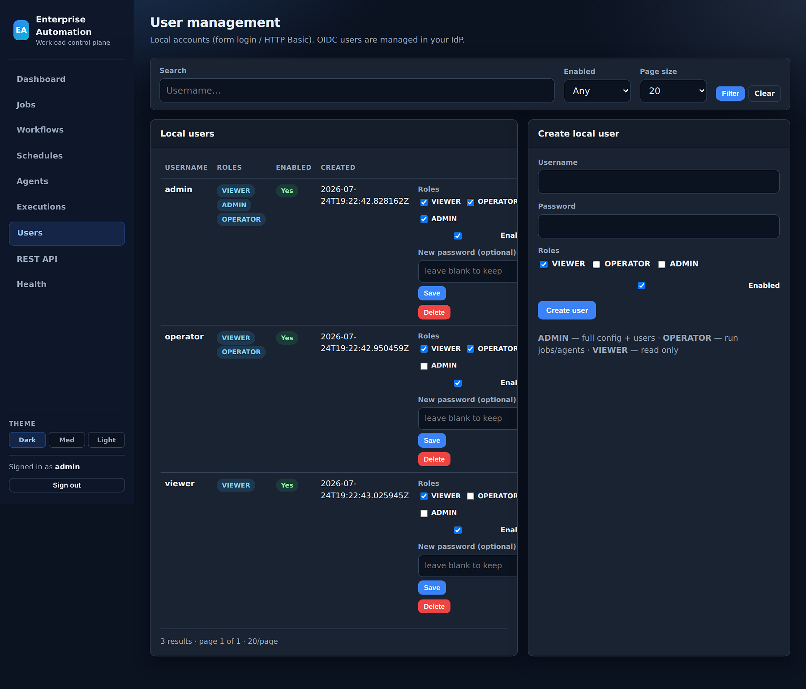

Run where files live
Federated agents on Linux and Windows claim work from the control plane. Pin jobs to preferred hosts so start/stop scripts, batch jobs, and release binaries execute next to the data and files they depend on.
Production-ready workload automation
Just Run It is a commercial control plane for jobs, workflows, and schedules— with agents on the systems that run your scripts and binaries. Multi-team workspaces, RBAC and SSO, execution triage, and HA deployment paths your ops teams already know.

Positioned for teams who need reliable automation now — real shell and binary work on their hosts, clear ownership, and a control plane operators will actually use every day.
Federated agents on Linux and Windows claim work from the control plane. Pin jobs to preferred hosts so start/stop scripts, batch jobs, and release binaries execute next to the data and files they depend on.
Full execution history, status filters, cancel and kill, failure reason and log output, orphan recovery when an agent is lost mid-run, and optional email alerts — the loop production ops teams live in.
Personal, group, and platform workspaces on one shared control plane. VIEWER / OPERATOR / ADMIN roles, audit attribution, and optional OIDC SSO for enterprise identity.
Just Run It is offered under commercial production licenses. We work with you on deployment sizing, agent placement, and go-live so you can start generating value from day one. Contact us for pricing and a guided rollout.
A complete, production-capable offering for script- and binary-centric automation—without forcing every workload onto a single host.
What users, administrators, and systems operators can do day to day.
| Area | Capability |
|---|---|
| Catalog | Browse jobs, workflows, and schedules in workspaces you can see (personal, groups, platform shared) |
| Run | Run now for jobs and workflows (OPERATOR+); view execution status and logs |
| Create | Create and edit jobs, workflows, and schedules in workspaces you manage (personal ownership or group manager) |
| Schedules | Attach cron expressions; human-readable schedule descriptions in the UI |
| History | Search and filter executions; open detail with error reason and log output; filter failed runs |
| Recovery | Cancel queued/running work; requeue orphaned executions after agent loss (where permitted) |
| Workspace filter | Sidebar switcher focuses lists and dashboards on a selected workspace |
| Themes | Dark, medium, and light UI themes |
| Area | Capability |
|---|---|
| Full visibility | See and manage definitions and executions across all workspaces |
| Users | Admin user management: create, enable/disable, roles, password reset, delete |
| Groups | Create group workspaces; add and remove members (OWNER / MANAGER / MEMBER) |
| Platform workspace | Maintain company-shared job definitions visible to authenticated users |
| Security modes | Local accounts, hybrid, or OIDC-primary SSO with role mapping from the identity provider |
| Agents | Register, monitor, and remove agents; align naming for preferred-agent targeting |
| API | Full REST surface for automation, CI, and integration |
| Area | Capability |
|---|---|
| Topology | Stateless application nodes, PostgreSQL as system of record, optional HA (multi-node + DB lease for scheduler) |
| Execution modes | local (server runs jobs) or agent (workers claim work)—production typically agent mode |
| Containers | Docker Compose stack (Postgres + app nodes + agents); multi-stage images built from source |
| Kubernetes | Helm chart for server HA, agents, and optional in-cluster Postgres |
| Health | Spring Actuator health, readiness, metrics, Prometheus endpoint |
| Notifications | Optional email on failure (and optional success) via SMTP |
| Artifacts | Configurable cache directory for GIT_RELEASE downloads on server or agent hosts |
| Observability | Dashboard counts, audit events, execution diagnostics for ops triage |
Run automation on the hosts that hold your applications, data, and scripts—across teams and data centers.
/bin/sh or cmd.exeFull detail: Agents guide (PDF)

One control plane; clear boundaries for who sees and manages which automation. Pair with OIDC SSO so IdP groups map to VIEWER / OPERATOR / ADMIN while membership scopes each team’s catalog.
Each user receives a personal workspace. Operators create and schedule their own jobs without cluttering a global catalog.
Administrators create group workspaces and assign members as OWNER, MANAGER, or MEMBER. Shared pipelines stay with the team that owns them.
A platform workspace holds common definitions visible to authenticated users, with administrative control over edits.
Same product from first install through multi-node production—choose the footprint that matches your estate.
Operators / UI
│
│ HTTPS · REST API · session or SSO
▼
┌─────────────────────────────────────┐
│ Control plane (N app nodes) │
│ UI · REST · scheduler · RBAC │
└───────────────┬─────────────────────┘
│ private DB network
▼
PostgreSQL
(system of record)
Agents (Linux / Windows / containers)
│
│ HTTPS outbound only
│ register · heartbeat · claim · complete
│ authenticated agent API (no direct DB)
└──────────────────────────────► Control plane
Agents never connect to the database. They call the control plane over a secured HTTP API (register, claim, complete). Only app nodes talk to PostgreSQL on a private network. Customers typically run dedicated production control planes (and optional pre-production) with agents co-located to each environment’s application estate—so work runs next to the systems it serves. One-page PDFs: deployment architecture · security overview.
Live control-plane captures (medium theme) with on-screen chapter captions. Use on sales calls, architecture reviews, and security walkthroughs.
~3 minute elaborate walkthrough: hybrid login, Keycloak SSO (same pattern as Entra ID / Okta), IdP groups → VIEWER / OPERATOR / ADMIN, Finance vs Platform team catalogs, admin groups & users, and agents on HTTP Basic (not browser OAuth).
~2 minute product tour: dashboard, jobs, editor, run, workflows, schedules, agents, executions, and admin users.
Silent picture with on-screen chapter captions — present while the video plays on customer calls.
Customer-facing product materials for procurement, architecture review, and commercial licensing. Share freely with stakeholders.
~3 min SSO walkthrough — Keycloak groups to roles, Finance vs Platform isolation, admin groups.
~2 min live UI walkthrough — jobs, workflows, agents, schedules, executions.
One-page brief: API-only agents, no agent-to-database path, RBAC/OIDC, production hardening checklist.
One-page reference: control plane, private PostgreSQL, agents over HTTPS claim/complete only.
Capabilities, UI walkthrough with screenshots, technologies, and deployment models.
Offering summary: features, roles, agents, workspaces, and deployment options.
Registration, name vs hostname, preferred agent, and federated placement.
User, administrator, and systems operator capability lists for RFP-style review.
Commercial licensing
Just Run It is available for commercial production use. Contact us for pricing, deployment sizing, and a rollout plan for your environments. We respond quickly with clear next steps.
Phone
318-232-2280Leave a message — we will call back to discuss your needs.
Website: https://justrunit.io
Product: Just Run It
Domain: justrunit.io
Email: justrunit.io@gmail.com
Phone: 318-232-2280 (leave a message)
Category: Enterprise workload automation control plane
Short answers for buyers, operators, and searchers.
Just Run It is production-ready enterprise workload automation: a web control plane for jobs, workflows, and schedules, plus out-of-process agents that run work on Linux, Windows, or container hosts you control.
Yes. The product ships with the capabilities operators need day to day — real COMMAND jobs, workflows, cron schedules, federated agents, workspaces, RBAC, optional OIDC, execution triage, and production deployment options (Compose HA, Kubernetes/Helm, bare metal). Commercial licenses are available now.
Yes. Install agents on team-owned systems and pin jobs with preferred agent names. Workspaces keep personal and group catalogs separate on one shared control plane.
Recommended paths are Docker Compose with PostgreSQL and multi-node app tier, or Helm on Kubernetes. Bare-metal/VM Java 21 installs are also supported. A local JAR is available for sandbox and demos.
Email justrunit.io@gmail.com or call 318-232-2280 and leave a message — we will call back to discuss production licensing, sizing, and go-live.
Full-width previews (1800px sources). Click to open native resolution, or use Open full size for the original PNG without scaling.








{kind=link}
{kind=link}
{kind=link}
{kind=link}
{kind=link}
{kind=link}
{kind=link}
{kind=link}
{kind=link}
{kind=link}